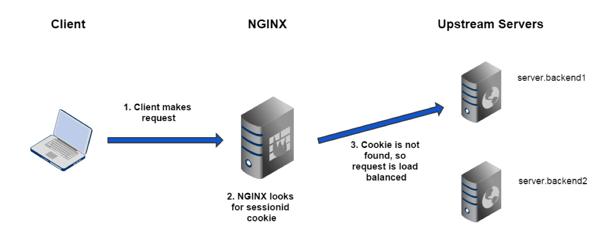

Adv. Load Balancing
Flawless Application Delivery
Trainer Intro
James Tacker
Technology Consultant & Content Developer
Previous Training Work:
- Sauce Labs
- New Relic
- Salesforce
- Atlassian
Prerequisites/Expectations
- Sysadmin, DevOps, Solution Architect
- Completed NGINX Core
- Some familiarity with Linux
- Text Editor: Vim, Vi, Emacs etc.
- Solid understanding of Network topologies
The Training Environment
- AWS EC2 Instances
- Ubuntu
- NGINX Plus
- Wordpress
- Tomcat 7
Log Into VM
If you haven't done so already, please take the time to SSH into your EC2 Instances (Windows users use PuTTY).
Check your email for the login credentials, check your spam folder!
ssh student<number>@<ec2-server-hostname>
Course Administration
- Course Duration: 4 hours
- Ask questions at any time!
Agenda

Load Balancing Review
Module Objectives
This module reviews the following topics:
- Configuration Overview
- Selection Algorithms
- Hardware Migration for F5/Netscaler
- Extended Status module for monitoring
Value of NGINX in DevOps Chain

Load Balancing Components
- Selection Algorithm
upstreamproxy_passhealth_check
Load Balancing Configuration
upstream myServers {
server localhost:8080;
server localhost:8081;
server localhost:8082;
}
server {
listen 80;
root /usr/share/nginx/html;
location / {
proxy_pass http://myServers;
}
}
Selection Algorithms
- weighted-round-robin (default)
ip_hash&hashleast_connleast_time
Lab 1.1: Configure a New Upstream
- Create a configuration file called
main.confin/etc/nginx/conf.dwith aserverthat listens on80 - Add three servers in the
upstreamblock (ask your instructor for the backend urls) - Create a
locationprefix toproxy_passto yourupstreamgroup. - Define an
error_logwith a level ofinfoand anaccess_logwith a level ofcombined - Save and reload NGINX
- Test in a local browser (refresh multiple times)
- Read the
access_logto see destination of request
Migrating from Hardware
- No need to "rip and replace"
- Can work in parallel with legacy hardware
- Terminology Differences
- NSIP, SNIP, Self-Ip etc.
- VIP, Management IP, Virtual Servers
- Monitor, High Availability, iRules, CLI
Migrating from F5
| F5 BIG-IP LTM | NGINX+ |
|---|---|
| Self-IP address | N/A NGINX uses underlying OS networking |
| Management IP addresses and port | Linux host IP (primary interface) |
| Virtual Server | server and location |
| Pool and node list | upstream |
| iRules | server, location, NGINX Lua, or nginScript modules |
| High Availability | nginx-ha-keepalived |
Converting F5 Configurations
# create pool test_pool members add { 10.10.10.10:80 10.10.10.20:80 }
# create virtual test_virtual { destination 192.168.10.10:80 pool test_pool source-address-translation { type automap } ip-protocol tcp profiles add { http } }
# save sys config
upstream test_pool {
server 10.10.10.10:80;
server 10.10.10.20:80;
}
server {
listen 192.168.10.10:80;
location / {
proxy_pass http://test_pool;
}
...
}
Converting F5 SSL Offload
# create pool ssl_test_pool members add { 10.10.10.10:443 10.10.10.20:443 }
# create virtual test_ssl_virtual { destination 192.168.10.10:443 pool ssl_test_pool source-address-translation { type automap } ip-protocol tcp profiles add { http } }
# save /sys config
# create profile client-ssl test_ssl_client_profile cert test.crt key test.key
# modify virtual test_ssl_virtual profiles add { test_ssl_client_profile }
# save /sys config
# create profile server-ssl test_ssl_server_profile cert test.crt key test.key
# modify virtual test_ssl_virtual profiles add { test_ssl_server_profile }
# save /sys config
upstream ssl_test_pool {
server 10.10.10.10:443;
server 10.10.10.20:443;
}
server {
listen 192.168.10.10:443 ssl;
ssl_certificate /etc/nginx/ssl/test.crt;
ssl_certificate_key /etc/nginx/ssl/test.key;
location / {
proxy_pass http://ssl_test_pool;
}
}
iRule Translations
- Request Redirect:
return - Request Rewrite:
rewrite - Response Rewrite:
sub_filter - Searching Files:
try_files
Request Redirect
#F5 iRule
when HTTP_REQUEST {
HTTP::redirect "https://[getfield [HTTP::host] ":" 1][HTTP::uri]"
}
----------------------------------------------------------------------
#NGINX
location / {
return 301 https://$host$request_uri;
}
Request Rewrite
#F5 iRule
when HTTP_REQUEST {
if {[string tolower [HTTP::uri]] matches_regex {^/music/([a-z]+)/([a-z]+)/?$} } {
set myuri [string tolower [HTTP::uri]]
HTTP::uri [regsub {^/music/([a-z]+)/([a-z]+)/?$} $myuri "/mp3/\\1-\\2.mp3"]
}
}
-------------------------------------------------------------------------------
#NGINX
location ~*^/music/[a-z]+/[a-z]+/?$ {
rewrite ^/music/([a-z]+)/([a-z]+)/?$ /mp3/$1-$2.mp3 break;
proxy_pass http://music_backend;
}
Response Rewrite
#F5 iRule
when HTTP_RESPONSE {
if {[HTTP::header value Content-Type] contains "text"} {
STREAM::expression {@/mp3/@/music/@}
STREAM::enable
}
}
--------------------------------------------------------------
#NGINX
location / {
sub_filter '/mp3/' '/music/';
proxy_pass http://default_backend;
}
Migrating from NetScaler
| NetScaler | NGINX+ |
|---|---|
| NetScaler IP (NSIP) | NGINX+ host IP |
| Subnet IP (SNIP) | NGINX+ host IP |
| Virtual IP (VIP) | Same Concept |
| Virtual Servers | server, server_name, and location |
| Server, Service, Service Group | upstream |
| High Availability | nginx-ha-keepalived |
Converting NetScaler Configurations
add lb vserver myvserver HTTP 10.0.0.99 80
server {
listen 10.0.0.99:80;
server_name .example.com;
...
}
Converting NetScaler Service Group Entities
add serviceGroup myapp HTTP
bind serviceGroup myapp 10.0.0.100 80
bind serviceGroup myapp 10.0.0.101 80
bind serviceGroup myapp 10.0.0.102 80
upstream myapp {
server 10.0.0.100:80;
server 10.0.0.101:80;
server 10.0.0.102:80;
}
Deployment Scenario 1
NGINX does ALL Load Balancing

Deployment Scenario 2
NGINX Works in Parallel with Legacy Hardware

Deployment Scenario 3
NGINX Sits behind Legacy Hardware
Searching For Files
if directive is bad practice
try_files directive is a better choice
if Directive
- Can cause NGINX to SIGSEGV
- Essentially creates a nested
locationblock that has to run on every request - Only 100% safe use cases:
return...;rewrite ... last/permanent;
if ($request_method = POST ) {
return 405;
}
---------------------------------------------------
if ($args ~ post=140){
rewrite ^ http://example.com/ permanent;
}
try_files Directive
- NGINX checks for the existence of files and/or directories in order
- Commonly uses the
$urivariable - If no file or directory exists, NGINX performs an
internalredirect
location / {
try_files $uri $uri/ @proxy;
}
location @proxy {
proxy_pass http://backend/index.php;
}
error_page Directive
- Create and reference custom error pages
- Best practices:
- Set
rootforerror_page - Separate messages for each code or range
- Set
error_page 404 /404.html;
location = /404.html {
root /usr/share/nginx/html;
}
error_page 500 502 503 504 /50x.html;
location /50x.html {
root /usr/share/nginx/html;
}
TCP/UDP Load Balancing
Module Objectives
This module enables you to:
- Explore L7 and L4 differences with NGINX Plus
- Differentiate between
streamandhttpcontext - Configure logging for TCP/UDP upstream
- Create Active Health Checks for
streamcontext
http vs. stream
http
- Parses
httprequest - L7 Layer
- Header injection
- Location routing
- SSL termination
stream
- Raw IP packets
- L3/L4 Layer
- Pass SSL certs
- Lower overhead
- Network visibility
stream Context
Key Differences
proxy_passrelegated toservercontext- Active
health_checkswork differently thanhttpload balancer - IP Transparency,
proxy_protocol, and Direct Server Return (DSR) instead ofproxy_set_header - Logging only available with verison r11 or higher
IP Transparency
The Problem
Retain source IP during a TCP (or HTTP) reverse proxy to an application server
The Solution
proxy_bind directive + transparent paramerter
stream {
server {
listen 3306;
location / {
proxy_bind $remote_addr transparent;
proxy_pass http://mysql_db_upstream;
}
}
}
IP Transparency Diagram
proxy_protocol Directive
- Allows NGINX to accept client information via
proxy_protocolfrom proxy servers/load balancers - Examples origin services:
- HAProxy
- Amazon ELB
- GCE Active LB
stream {
server {
listen 12345;
proxy_pass example.com:12345;
proxy_protocol on;
}
}
proxy_protocol Example
log_format combined '$proxy_protocol_addr - $remote_user [$time_local] '
'"$request" $status $body_bytes_sent '
'"$http_referer" "$http_user_agent"';
server {
listen 80 proxy_protocol;
listen 443 ssl proxy_protocol;
set_real_ip_from 192.168.1.0/24;
real_ip_header proxy_protocol;
proxy_set_header X-Real-IP $proxy_protocol_addr;
proxy_set_header X-Forwarded-For $proxy_protocol_addr;
}
}
DSR
- Responses (return packets) bypass Load Balancer
- Takes load off of load balancer
health_checksno longer work- Requires further configuration (iptables, Router configuration etc.)
server {
listen 53 udp;
proxy_bind $remote_addr:$remote_port transparent;
proxy_responses 0;
# proxy_timeout 1s;
}
SSL Server Name Routing
- The
prereadfeature can inspect incoming SSL/TLS and determine target - Can also use the
mapto determine complex routing method
stream {
server {
listen 443;
ssl_preread on;
proxy_pass $ssl_preread_server_name;
}
}
Logging for stream
- Use
access_logto inspect data rates, protocols, error conditions, etc. - Only available in r11
log_format tcp_log '$remote_addr [$time_local] ' '$protocol $status $bytes_sent $bytes_received' '$upstream_session_time $upstream_addr $proxy_protocol_addr’;
TCP/UDP Considerations
- Access Control Limits
allow,denyproxy_download_rate,proxy_upload_ratelimit_conn,limit_zone
- Use
slow-startto prevent overload - Use maintenance parameters to handle failover, updates, migrations etc.
drainbackupdown
Lab 3.1: Create TCP Upstream
- In the
tcpdirectory, create/openlb.conf - Create a
serverthat listens on port90and proxies totcp_backend
stream {
upstream tcp_backend {
zone tcp_upstream 64k;
server backend1:8080;
server backend2:8080;
server backend3:8080;
}
server {
listen 90;
proxy_pass tcp_backend;
}
}
Lab 3.2: Create a UDP Upstream
- Create a
serverthat listens on53, and append theudpparameter - Use a
proxy_passto proxy to a newupstream udp_backend
upstream udp_backend {
zone udp_upstream 64k;
server ec-2:53;
server ec-2:53;
server ec-2:53;
}
server {
listen 53 udp;
proxy_pass udp_backend;
}
TCP/UDP Health Checks
- Passive health check use
health_check - Active health check use parameters:
interval,passes,fails
- Sophisticated health check use
matchblocksend: text string or hexidecimalsexpect: literal string or regex data response
Lab 3.3: TCP Health Check
- Configure a passive
health_checkforudpandtcpupstreams - Test using
status.html - Create a
matchblock the uses aGETrequest to confirm TCP connection
match http {
send "GET / HTTP/1.0\r\nHost: localhost:8080\r\n\r\n";
expect ~* "200 OK";
}
server {
listen 90;
health_check interval=10 passes=5 fails=5 match=http;
proxy_pass tcp_backend;
}
MySQL Load Balancing
- Configure load balancer and make a SQL query to confirm behavior
- Listening port must use MySQL server port (default
3306)
stream {
upstream db {
server db1:3306;
server db2:3306;
server db3:3306; }
server {
listen 3306;
proxy_pass db;
}
}
Avoding Parrallel DB Updates
- Failover:
db2acts as abackupanddb1receives connections to replicate across other nodes - Silent Partner:
db3is a silent partner todb1anddb2 - Failure Detection:
proxy_connect_timeoutset to low value (1second or less) to catch early failures
upstream db {
server db1:3306;
server db2:3306 backup;
server db3:3306 down;
}
server {
listen 3306;
proxy_pass db;
proxy_connect_timeout 1s;
}
High Availability
Module Objectives
This module enables you to:
- Explore
nginx-ha-keepalivedsolution - Understand syntax and basics of VRRP
- Enable session affinity to override load balancer
- Explore and demo various cloud solutions
High Availability
On Prem
keepalived- Uses Virtual Router Redundancy Protocol (VRRP)
Cloud Solutions
- Google Cloud Compute
- Floating IPs
- AWS:
- Elastic IP
- ELB
- Route 53
- Lambda
nginx-ha-keepalived
Separate daemon from NGINX
- manages shared virtual IPs
- designates master NGINX node
- Sends VRRP advertisement messages
VRRP
- health check facility to determine service availability
- requires 3 consective advertisments from
keepalived - Basic active-passive setup
keepalived Configuration
- Node values
unicast_src_ipunicast_peer
prioritynotifyvrrp_instance
global_defs {
vrrp_version 3
}
vrrp_script chk_manual_failover {
script "/usr/libexec/keepalived/nginx-ha-manual-failover"
interval 10
weight 50
vrrp_script chk_nginx_service {
script "/usr/libexec/keepalived/nginx-ha-check"
interval 3
weight 50
}
vrrp_instance VI_1 {
interface eth0
priority 101
virtual_router_id 51
advert_int 1
accept
garp_master_refresh 5
garp_master_refresh_repeat 1
unicast_src_ip 192.168.100.100
unicast_peer {
192.168.100.101
}
virtual_ipaddress {
192.168.100.150
}
track_script {
chk_nginx_service
chk_manual_failover
}
notify "/usr/libexec/keepalived/nginx-ha-notify"
}
Defining Mastership
No fencing mechanism
chk_nginx_serviceweightintervalrisefall
vrrp_script chk_manual_failover {
script "/usr/libexec/keepalived
/nginx-ha-manual-failover"
interval 10
weight 50
vrrp_script chk_nginx_service {
script "/usr/libexec/keepalived
/nginx-ha-check"
interval 3
weight 50
}
script path should be on one line
Active-Passive with keepalived
- Install the package and run the setup:
$ apt-get install nginx-ha-keepalived $ nginx-ha-setup - Configure the nginx-ha-check script
vrrp_script chk_nginx_service { script "/usr/libexec/keepalived/nginx-ha-check" interval 3 weight 50 }
Documentation:
Adding More VIPs
virtual_ipaddress block replicates ip utility
virtual_ipaddress {
192.168.100.150
192.168.100.200
}
Troubleshooting keepalived
Feb 27 14:42:04 centos7-1 systemd: Starting LVS and VRRP High Availability Monitor...
Feb 27 14:42:04 Keepalived [19242]: Starting Keepalived v1.2.15 (02/26,2015)
Feb 27 14:42:04 Keepalived [19243]: Starting VRRP child process, pid=19244
Feb 27 14:42:04 Keepalived_vrrp [19244]: Registering Kernel netlink reflector
Feb 27 14:42:04 Keepalived_vrrp [19244]: Registering Kernel netlink command channel
Feb 27 14:42:04 Keepalived_vrrp [19244]: Registering gratuitous ARP shared channel
Feb 27 14:42:05 systemd: Started LVS and VRRP High Availability Monitor.
Feb 27 14:42:05 Keepalived_vrrp [19244]: Opening file '/etc/keepalived/keepalived.conf '.
Feb 27 14:42:05 Keepalived_vrrp [19244]: Truncating auth_pass to 8 characters
Feb 27 14:42:05 Keepalived_vrrp [19244]: Configuration is using: 64631 Bytes
Feb 27 14:42:05 Keepalived_vrrp [19244]: Using LinkWatch kernel netlink reflector...
Feb 27 14:42:05 Keepalived_vrrp [19244]: VRRP_Instance(VI_1) Entering BACKUP STATE
Feb 27 14:42:05 Keepalived_vrrp [19244]: VRRP sockpool: [ifindex(2), proto(112), unicast(1), fd(14,15)]
Feb 27 14:42:05 nginx -ha-keepalived: Transition to state 'BACKUP ' on VRRP instance 'VI_1 '.
Feb 27 14:42:05 Keepalived_vrrp [19244]: VRRP_Script(chk_nginx_service) succeeded
Feb 27 14:42:06 Keepalived_vrrp [19244]: VRRP_Instance(VI_1) forcing a new MASTER election
Feb 27 14:42:06 Keepalived_vrrp [19244]: VRRP_Instance(VI_1) forcing a new MASTER election
Feb 27 14:42:07 Keepalived_vrrp [19244]: VRRP_Instance(VI_1) Transition to MASTER STATE
Feb 27 14:42:08 Keepalived_vrrp [19244]: VRRP_Instance(VI_1) Entering MASTER STATE
Feb 27 14:42:08 Keepalived_vrrp [19244]: VRRP_Instance(VI_1) setting protocol VIPs.
Feb 27 14:42:08 Keepalived_vrrp [19244]: VRRP_Instance(VI_1) Sending gratuitous ARPs on eth0 for 192.168.100.150
Feb 27 14:42:08 nginx -ha-keepalived: Transition to state 'MASTER ' on VRRP instance 'VI_1 '.
Feb 27 14:42:13 Keepalived_vrrp [19244]: VRRP_Instance(VI_1) Sending gratuitous ARPs on eth0 for 192.168.100.150
Active-Active
vrrp_script chk_nginx_service {
script "/usr/lib/keepalived/nginx-ha-check"
interval 3
weight 50
}
vrrp_instance VI_1 {
interface eth0
state BACKUP
priority 101
virtual_router_id 51
advert_int 1
accept
unicast_src_ip 192.168.10.10
unicast_peer {
192.168.10.11
}
virtual_ipaddress {
192.168.10.100
}
track_script {
chk_nginx_service
}
notify "/usr/lib/keepalived/nginx-ha-notify"
}
vrrp_instance VI_2 {
interface eth0
state BACKUP
priority 100
virtual_router_id 61
advert_int 1
accept
unicast_src_ip 192.168.10.10
unicast_peer {
192.168.10.11
}
virtual_ipaddress {
192.168.10.101
}
track_script {
chk_nginx_service
}
notify "/usr/lib/keepalived/nginx-ha-notify"
}
Cloud Solutions
Must have facility to determine mastership
- Floating IPs
- GCE Active LB
- AWS:
- ELB, Route 53, Elastic IPs
AWS HA Deployment
| Method | HA Type | Address Type |
|---|---|---|
| ELB | Active‑active | Dynamic; requires CNAME delegation |
| Route 53 | Active‑active or active‑passive | Static; DNS hosted in Route 53 |
Elastic IPs (keepalived) |
Active-passive | Static; DNS hosted anywhere |
| Elastic IP w/Lambda | Active-passive | Static; DNS hosted anywhere |
Elastic Load Balancer
Disadvantages
- Doesn't expose static IP
- Cannot map a root domain
- Doesn't support UDP LB (need Route 53)
Route 53
Disadvantages
- Doesn't update DNS Cached/Client records
Elastic IPs

Disadvantages
- Backup instance under-utilized
- Slow IP Association
- Complicated deployment
Session Affinity
For applications that require state data on backend servers
NGINX supports the following methods:
sticky cookiesticky learnsticky route
sticky cookie
Syntax:
sticky cookie name
upstream myServers {
server backend1;
server backend2;
server backend3;
sticky cookie my_srv expires=1h domain=example.com path=/cart;
}
sticky learn
Syntax:
sticky cookie name
upstream myServers {
server backend1;
server backend2;
server backend3;
sticky learn create=$upstream_cookie_sessionid lookup=$cookie_sessionid zone=client_sessions:1m;
}
server {
location / {
proxy_pass http://myServers;
}
}
sticky learn Part 1

sticky learn Part 2

sticky learn Part 3

sticky route
upstream myServers {
zone backend 64k;
server backend1 route=backend1;
server backend2 route=backend2;
server backend3 route=backend3;
sticky route $route_cookie $route_uri;
}
Tomcat Example

Routing Variables
map $cookie_JSESSIONID $route_cookie {
~.+\.(?P<route>\w+)$ $route;
}
map $request_uri $route_uri {
~JSESSIONID=.+\.(?P<route>\w+)$ $route;
}
Lab 4.1: Tomcat Route
- Open
main.conf. In thehttpcontext, create alog_formatcalledstickythat logs the following:log_format sticky "$request \t $status \t Client: $remote_addr \t Upstream IP: $upstream_addr \t Route URI: $route_uri \t Route Cookie: $route_cookie \t"; - Change the
access_loglevel tostickyaccess_log /var/log/nginx/main.access.log sticky;
Lab 4.2: Tomcat Route
- Enable
sticky routewith two variables:$route_cookie $route_uri; - Add the
routeparameter and a shared memory zonezone backend 64k; server <backend_url>:8080 route=backend1; server <backend_url>:8080 route=backend2; server <backend_url>:8080 route=backend3; - Add the following
mapsmap $cookie_jsessionid $route_cookie { ~.+\.(?P<route>\w+)$ $route; } map $request_uri $route_uri { ~jsessionid=.+\.(?P<route>\w+)$ $route; }
Lab 4.3: Tomcat Route Test
- In your shell, make the following
curlrequests:curl http://<localhost>:8080 - In a separate shell, run a
tail -fcommand on yourupstream_access.log - Do you notice the IP address changing?
- Open a browser, and step through the app via the following URI:
<localhost>/examples/servlets/servlet/SessionExample - Execute the application, and refresh your browser several times. What can you observe in the log now? Which IP address is the request hitting?
Lab 4.4: All Active GCE LB Demo
Active-Active + sticky sessions
Service Discovery and Scaling NGINX
Module Objectives
This module enables you to:
- Understand Service Discovery within the context of Microservice design
- Explore Zookeeper demo
- Deploy NGINX using a container service
- Explore
resolverandresolvedirectives
Monolith to Microservices
Monolithic Architecture
Microservices Architecture
Service Discovery
- Services need to know locations of each other
- Registries work in differenty ways
- Register and read information
resolver and resolve
resolverwill re-resolve the domain namevalidparameter overrides frequencyresolvequeries individual servers in anupstream
resolver 10.0.0.2 valid=10s;
#example 1
server {
location / {
set $backend_servers backends.example.com;
proxy_pass http://$backend_servers:8080;
}
#example 2
upstream myServers {
server backend1 resolve;
server backend2 resolve;
}
resolver Example
http {
resolver 10.xxx.xxx.2 valid=30s;
server {
set $elb "{{ lp_app_elb }}";
location / {
proxy_pass http://$elb/;
}
}
High Quality LB
- Precise distribution of traffic to services
- Developer Configurable

Zookeeper Demo
How the Demo Works
- Zookeeper performs service discovery
- Registrator registers services with Zookeeper
- Web app
hellosimulates backends - NGINX+ load balances the services
Other Service Discovery Demos
Containerized Services
- Streamlined Deployment
- Relatively Secure
- Infrastructure agnostic
Docker Overview
- Develop apps along with components
- Docker Engine
- Server
- REST API
- CLI
Intro Docker Images
Dockerfile Overview
Dockerfile when used with docker build command, automates command line instructions:
FROM ubuntu:12.04
MAINTAINER jtack4970 version: 0.1
ADD ./mysql-setup.sh /tmp/mysql-setup.sh
RUN /bin/sh /tmp/mysql-setup.sh
EXPOSE 3306
Docker Commands
$ docker pull
$ docker run
$ docker build
$ docker create
$ docker push
NGINX and Docker
- Use NGINX as a containerized LB Service
- Configure NGINX and build with .conf files
- Pull From or Push To Dockerhub
Dockerhub

Lab 6: NGINX + Docker
- Install Docker and pull NGINX Image
$ sudo apt-get install docker.io $ sudo docker images $ sudo docker pull nginx:1.12.0 $ sudo docker run -d nginx:1.12.0 - Try installing other versions of NGINX
$ sudo docker run -d nginx:1.11.0 $ sudo docker run -d nginx:1.10.0 $ sudo docker ps - Gather IPs and Hit NGINX
$ sudo docker ps $ sudo docker inspect <container ID> $ curl <container ip>
Lab 6: Cleanup Containers
- Stop Containers
$ sudo docker stop <ID> - Remove Containers
$ sudo docker rm <ID> - Tear down All containers
$ sudo docker stop $(docker ps -a -q)
$ sudo docker rm -v $(docker ps -a -q)
# -v flag removes volumes on file system
Scaling with Kubernetes
- Manage Containerized Services in Cluster
- Easier App Management
- Service Discovery
- Configuration Files
- Rolling Updates
- Monitoring
- High Level Abstraction
- i.e. Describe apps, what they should, let Kubernetes figure out the 'how'
Intro to Kubernetes
Lab 7: Launch NGINX as K8 Service (with GCE)
- Grab and Set Availability Zones
$ gcloud compute zones list $ gcloud config set compute/zone <VALUE> - Create a Cluster
$ gcloud container clusters create <my-cluster> - Launch and expose NGINX
$ kubectl run nginx --image=nginx:1.12.0 $ kubectl expose deployment nginx --port 80 --type LoadBalancer - List the Services
$ kubectl get services
WTH is a Pod?
- Core of Kubernetes, represents a logical application
- Represents one or more containers
- i.e. containers with a hard dependencies on each other
- Can also contain volumes (data discs that live as long as the pod does)
- Any container can use a volume (because it’s a shared volume)
- Pods also share a network namespace (e.g. one IP per pod)
Creating Pods
- Uses .yaml file (manifest file like DockerFile)
- To create a pod use:
$ kubectl create -f <path/to/.yaml> - To display details a pod/pods use
$ kubectl get pods $ kubectl describe pods <POD NAME>
Service Discovery with Kubernetes
Containers, especially in a cluster, have dynamic IPs. A service like Kubernetes can implement service discovery to make sure incoming traffic from Load Balancer is routed correctly
OR we can use this:
resolver kube-dns.kube-system.svc.cluster.local valid=5s;
upstream backend {
zone upstream-backend 64k;
server webapp-svc.default.svc.cluster.local service=_http._tcp resolve;
}
Ingress Controller
Advanced Use Case of using NGINX as an Ingress ReplicationController
Secure and Fast
- Encryption at the transmission layer
- SSL handshake slows down communication
- Encryption is CPU intensive
Scaling Options
Dynamic Re-Configuration Recap
upstream_confserverparameters- Example:
curl -D http://server/upstream_conf?upstream=myServers&id=0&weight=5
Sample App
Proxy Model

Router Mesh
Fabric Model
Normal Process
Detail Process

Service Discovery

LB and Persistent SSL
Circuit Breakers

Network Considerations
- Docker Best Practices
- Process Failure means Container Failure
- Adding Another Layer to the Stack
- Dev Team Have Too Much Power
- Tooling to Make the Fabric Model, Simple to Create and Deploy